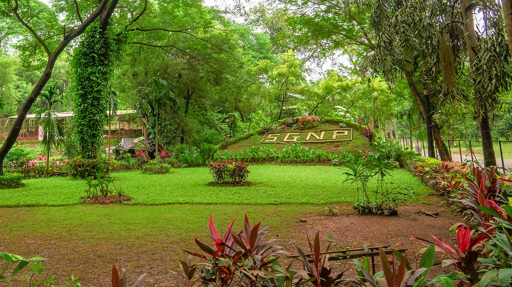

About Sanjay Gandhi National Park
Sanjay Gandhi National Park is an 87 km² protected area in Mumbai, Maharashtra State in India. It was established in 1996 with headquarters at Borivali. It is notable as one of the major national parks existing within a metropolis limit and is one of the most visited parks in the world.
History
The Sanjay Gandhi National Park area has a long history dating back to the 4th century BC. In ancient India, Sopoara and Kalyan were two ports in the vicinity that traded with ancient civilizations such as Greece and Mesopotamia. The 45 km (28 mi) land route between these two ports was partially through this forest. The Kanheri Caves in the center of the park were an important Buddhist learning center and pilgrimage site sculpted by Buddhist monks between 9th and 1st centuries BCE. They were chiseled out of a massive basaltic rock outcropping.
The park was named 'Krishnagiri National Park' in the pre-independence era. At that time the area of the park was only 20.26 sq. km (7.82 sq mi). In 1969, the park was expanded to its present size by acquiring various reserve forest properties adjoining the park. After this, an independent unit of the Forest Department called 'Borivali National Park Sub-division' administered the area. Krishnagiri National Park was created in 1974 and later renamed as 'Borivali National Park'. In 1981, it was re-dedicated as 'Sanjay Gandhi National Park' in memory of Sanjay Gandhi, the son of ex-Prime Minister of India Indira Gandhi.
How to Reach Us
The SGNP is amongst the most easily accessible National Parks in the country, well connected by road and rail networks. Given here are the directions and travel details to access SGNP from different directions in Mumbai. All distances given are from the Main Gate at Borivali (this entrance lies on the Western Express Highway – WEH).
Nearest Airport
Mumbai - 15 kms.
By Rail
Mumbai to Borivali is 30 kms by train on the western railway route. Suburban trains are available every 5 minutes.
By Road
Borivali is near the Mumbai octroi post on the Mumbai - Ahmedabad highway.
Best Time to Visit
September to March (Pleasant weather, minimum temp around 18°C).
Distances from various locations in Mumbai:
- Navy Nagar: 45 km
- Nariman Point: 41 km
- Worli: 30 km
- Sion: 27 km
- Bandra: 23 km
- Versova, Andheri: 15 km
- International Airport: 18 km | Domestic Airport: 16 km
From Central Mumbai & South Central Mumbai: It is advisable to reach Sion and drive along the Sion – Dharavi Road to connect the WEH at Bandra. Continue north towards SGNP.
From Eastern suburbs and Thane: From the eastern suburbs of Ghatkopar – Mulund, and from Thane urban, drive via Powai along LBS Marg to reach Gandhi Nagar Junction, then take the A.S. Road past IIT Powai.